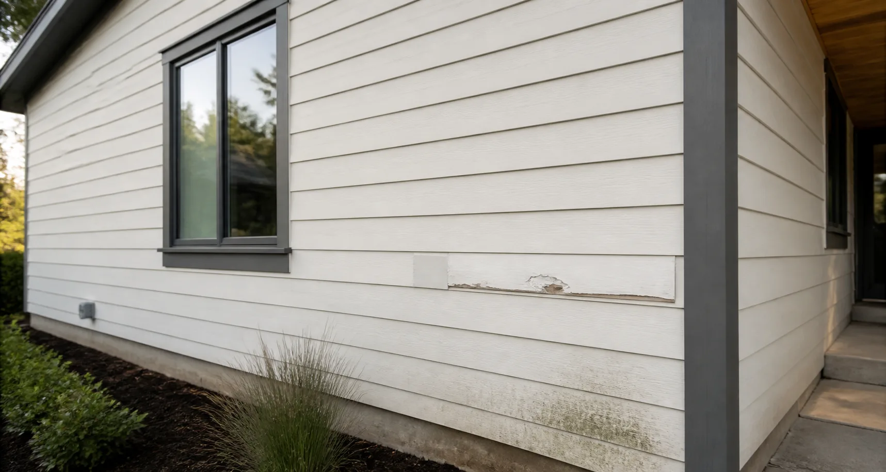
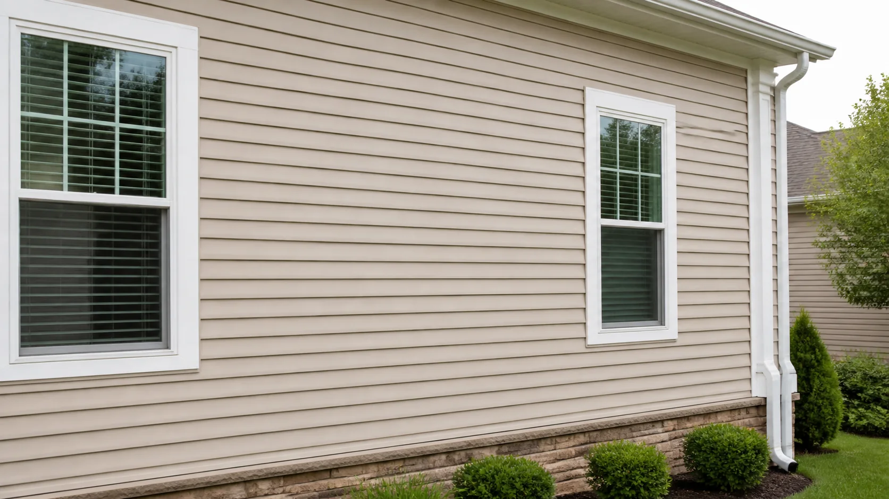

We check the panel, the fasteners behind it and the wrap underneath, since visible cracks often start with a hidden moisture issue.
Siding Repair

01 / 04
Repair · Assessment
A careful read of the damage first
Cracked courses, loose panels and soft trim lines can let water behind the facade, so every repair starts with a close exterior inspection.
We isolate the cause before we scope the fix — not just the visible crack.
We identify your existing profile, exposure and colour first, then source replacement material as close to the original run as possible.
Spot repairs are usually finished in a day; larger sections with moisture damage can take three to five days.
Yes. We check nearby courses, trim and seams so the repair solves the visible damage without missing the source around it.
Repair · Process
Matched repairs, course by course
Damaged panels are removed cleanly, replacements are fitted to the existing reveal, and seams are dressed so the patch disappears.
We work outward from the damage until the surrounding panels sit flush again.
The affected course is removed without disturbing sound panels above or below it, then a matched replacement is fastened into place.
Replacement pieces are checked against the existing facade in daylight before installation, not just against a sample chip.
Corner posts and trim are inspected for open seams and re-sealed or replaced so water can't re-enter the same spot.
We dry-fit the replacement and adjust the fastening depth so the repaired course aligns with the surrounding siding.
Repair · Protection
Protection that outlasts the walkthrough
Flashing, sealant lines and drainage details are corrected as part of the repair, not left for another visit.
Every repair closes with a clear note on what to watch going forward.
We re-flash exposed edges, refresh sealant lines and confirm water is routed away from the repaired section before we leave.
Repairs carry a 1 to 5-year workmanship warranty depending on the package and scope of the work.
Old material and fasteners are removed the same day, and the area is swept before the final walkthrough.
Before handoff, we review the repaired edge, sealant line and drainage path so the section is protected after the work is complete.
When small siding damage needs a focused repair plan
Loose panels, exposed edges, cracked courses and soft trim lines can let water behind the facade, so the repair starts with a careful exterior inspection.
Read MoreDamage Check
We isolate cracks, loose panels and exposed edges before setting the repair scope.
Panel Match
Replacement pieces are selected to align with existing color, profile and reveal.
Moisture Control
Edges, trim and sealant lines are repaired to keep water moving away from the wall.
Clean Finish
The repaired area is blended back into the facade so it does not read as a patch.
What makes a repaired siding area blend back into the home
A lasting repair matches panel exposure, trim depth, sealant lines and drainage details so the finished exterior looks calm and performs correctly.
Learn MoreBefore / After
See the Difference
Drag the divider across one damaged siding section to see the repair blend back into the facade.

BeforeAfterRepair Process
Why Homeowners Choose Our Repair Team
From the first inspection to the final seal, every repair is scoped, matched and finished with the same care — so the damaged section disappears back into a calm, protected facade.
Cracks, loose panels and exposed edges are traced back to their cause before any repair scope is set.
Replacement pieces are matched for profile, reveal and color so the repaired course sits flush with the surrounding field.
Flashing, seams and sealant lines are corrected to keep water moving away from the wall, not behind it.
Every replacement panel is checked against the existing facade in real light, so the repair doesn't read as a patch.
We leave each project with clear notes on upkeep, so the repaired section keeps performing for years, not just for the walkthrough.
$320/ Service
- Crack and panel repair
- Seam and trim correction
- Colour-matched restoration
- Clean exterior finish
- 1-year repair warranty
Same-week scheduling available
$980/ Project
- Crack and panel repair
- Moisture damage treatment
- Seam and trim correction
- Colour-matched restoration
- Durable sealing
- Protective finishing
Most requested repair package
$1,650/ Project
- Moisture damage treatment
- Durable sealing
- Protective finishing
- Colour-matched restoration
- 5-year repair warranty
Includes full exterior inspection
Match the existing profile.
165 mm
135 mm
105 mm